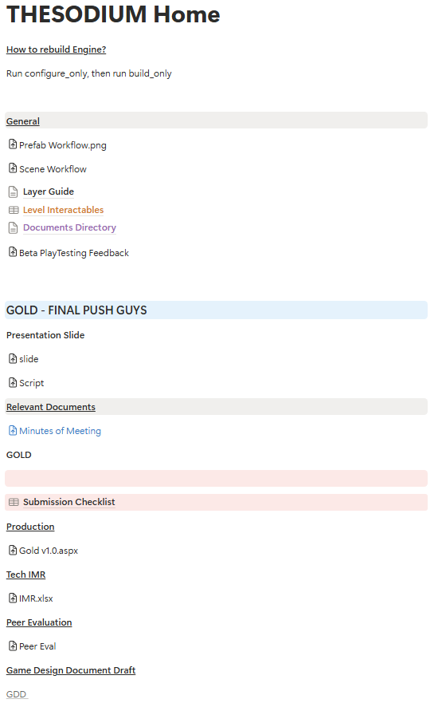
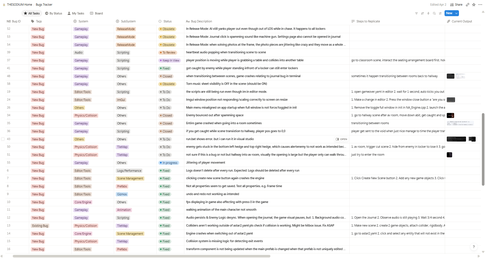
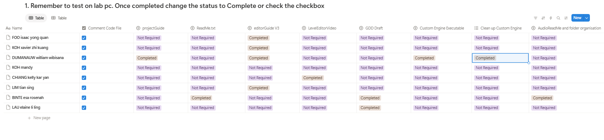
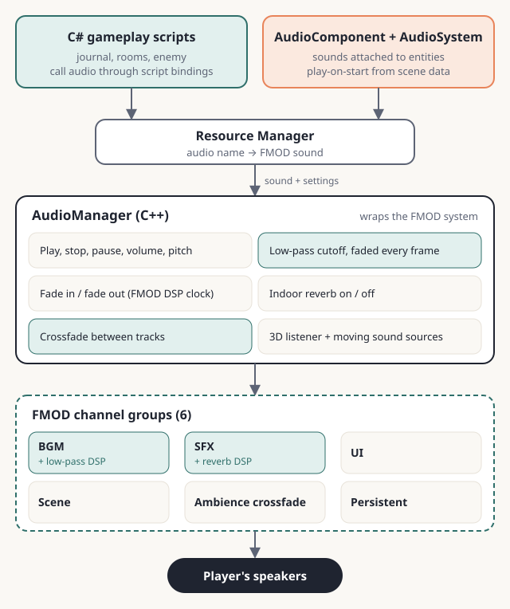
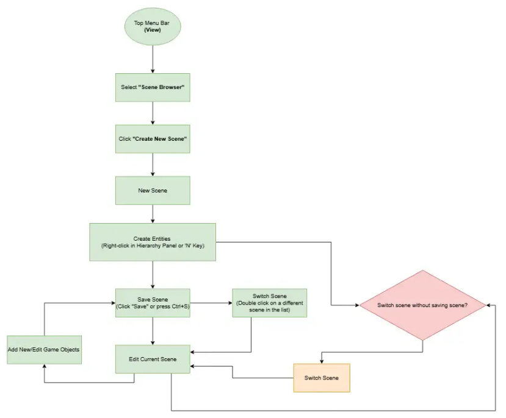
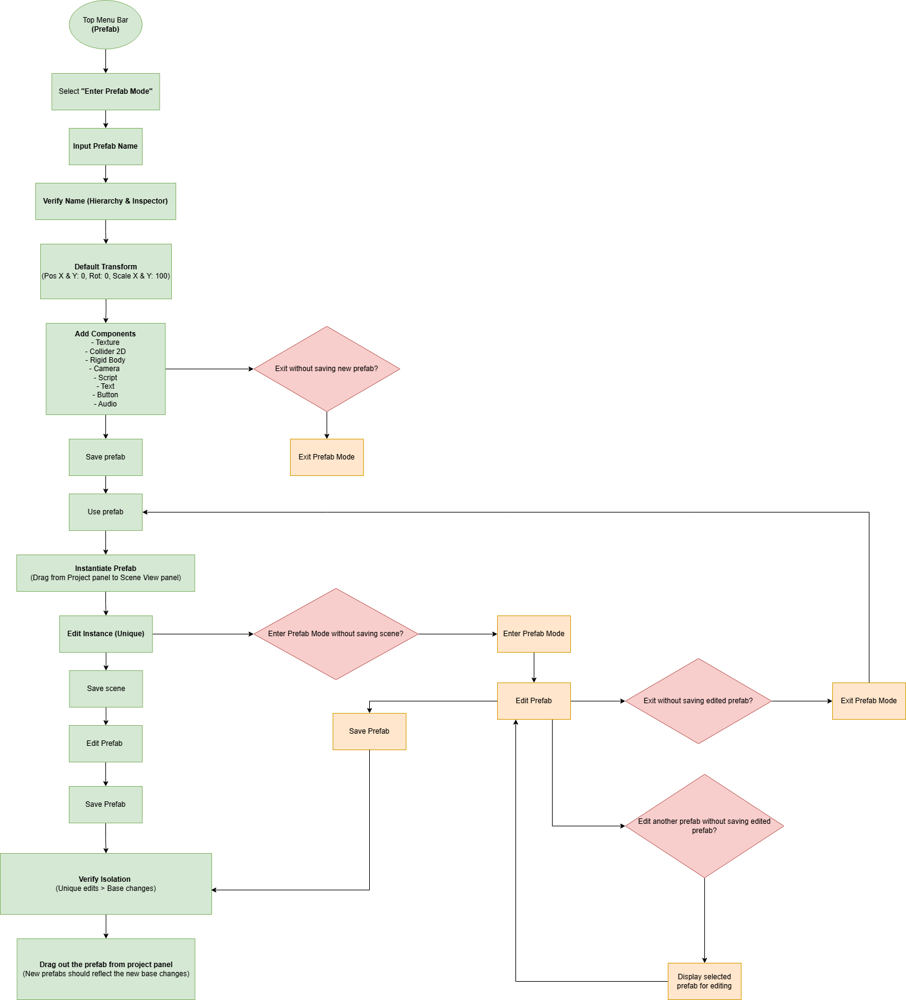

Case study · Programming & production
The Unraveling
The Unraveling is a 2D top-down puzzle/stealth horror game. Players follow the trail of their best friend, Yuki, who disappeared after entering the haunted Silent Veil High. Trapped in a looping nightmare, you must uncover the truth behind a curse born from rumor and guilt. The objective is to navigate the school, solve puzzles, and survive the pursuit of the vengeful spirit, Kayo, to find out what really happened to your friend.
Trailer
My contribution
Audio: spatial sound with FMOD
I designed and built the engine's audio system in C++ on top of FMOD. It is exposed to our C# gameplay scripts through script bindings, written mainly by our Technical Lead, with my input. The audio system includes:
- Channel groups: six groups (BGM, SFX, UI, scene, ambience crossfade and persistent) with independent volume, pause and stop control.
- Crossfading: scheduled on FMOD's DSP clock so one track fades out as the next fades in, with a short buffer to avoid clicks.
- Low-pass filter: a filter on the ambience group. FMOD can't animate DSP parameters over time, so I wrote the logic that smoothly fades the cutoff.
- Indoor reverb: a toggleable reverb on the SFX group.
- 3D spatial audio: maps our 2D top-down world onto FMOD's 3D listener, with distance rolloff. Moving sources such as the enemy update their position as they move.
- Audio component: sounds attach to entities and are saved in scene files, with play-on-start, loop, volume and mute options.
- Pop-free stops: SFX stop with a 50 ms fade to prevent speaker clicks.
How I used it in the game
- Crossfading: audio crossfades as the player moves from one room to another, so transitions feel smooth instead of cutting off abruptly.
- Low-pass filter: when the player opens the journal, I muffle the background ambience so they can focus on reading without the surroundings pulling their attention.
Try the concept
This small demo uses synthesised sound in your browser to show the two techniques. It is a simplified illustration, not the game's actual audio. Use headphones and keep the volume low.
Low-pass filter
Cutting high frequencies makes a sound feel far away or behind a wall.
Crossfade
Blend smoothly between two layers, like moving from one room's ambience to another.
Tip: swap in clips from your own game by replacing the synthesised sources in js/audio-demo.js.
Production: keeping the team on track
- Centralised the team's workflow in Notion so design and engineering stayed aligned, with a 100% on-time milestone submission rate.
- Ran structured playtesting and UAT before each major milestone, tracking and resolving 40+ technical regressions.
- Regular standups: I ran standups two to three times a week. Everyone shared their progress, any blockers and what they planned to work on next, so problems surfaced early instead of at the milestone deadline.
- Following up between meetings: I checked in with team members individually on their progress and followed up when something was quiet or stuck.
- Bug prioritisation: I prioritised bugs by impact on the team. Major blockers that affected other programmers' workflows were fixed first. Minor bugs were pushed to later milestones. If a fix was complex or would change the whole infrastructure, we deferred it to the next milestone rather than risk everyone's progress. For example, the isometric overlay for our top-down view was a big change that would have affected everyone's work, so I pushed it to the next milestone to keep the current build stable and shippable.



System overview
Audio pipeline

Scene switching workflow
I built the scene workflow for our editor in C++ with ImGui. The Scene Browser panel lists every scene, loads one on double-click, warns before discarding unsaved changes, checks file names when saving, and creates new scenes. Creating a scene generates its scene file and a matching tilemap file with default texture mappings, so designers can start building right away.

Prefab workflow
Our Technical Lead built the core prefab system. I built the editing and saving of prefabs on top of it. A designer edits a prefab through an entity in the editor, and saving writes that entity's components back to the prefab's YAML file. The prefab is then reloaded right away, so the engine uses the new data instead of the old version. I also added entity tracking: when a prefab is applied to an entity, the prefab records that entity in its list of instances if it isn't already there, so each prefab knows which entities in the scene came from it.
View the prefab workflow flowchart

What I learned
- Audio transitions shape how a game feels. When moving from one room to another, the sound should crossfade, because an abrupt cut feels jarring and breaks immersion, especially in a horror game where atmosphere is everything. I also learned that a low-pass filter can direct attention: muffling the background ambience while the journal is open helps the player focus on reading instead of the sounds around them.
- A PM's job is to empower leads to act early. Technical debt is cheapest to deal with at the start and snowballs in the final weeks. If I ran another project, I would set up stricter delegation and accountability from the beginning: clear owners for each area, and leads encouraged to raise and fix structural problems early instead of waiting for a milestone crunch.